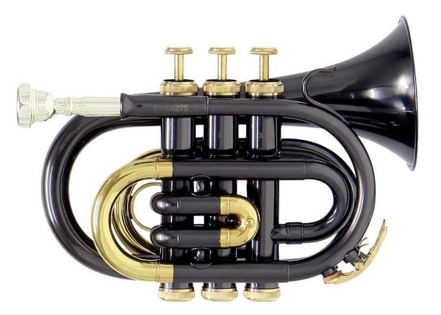
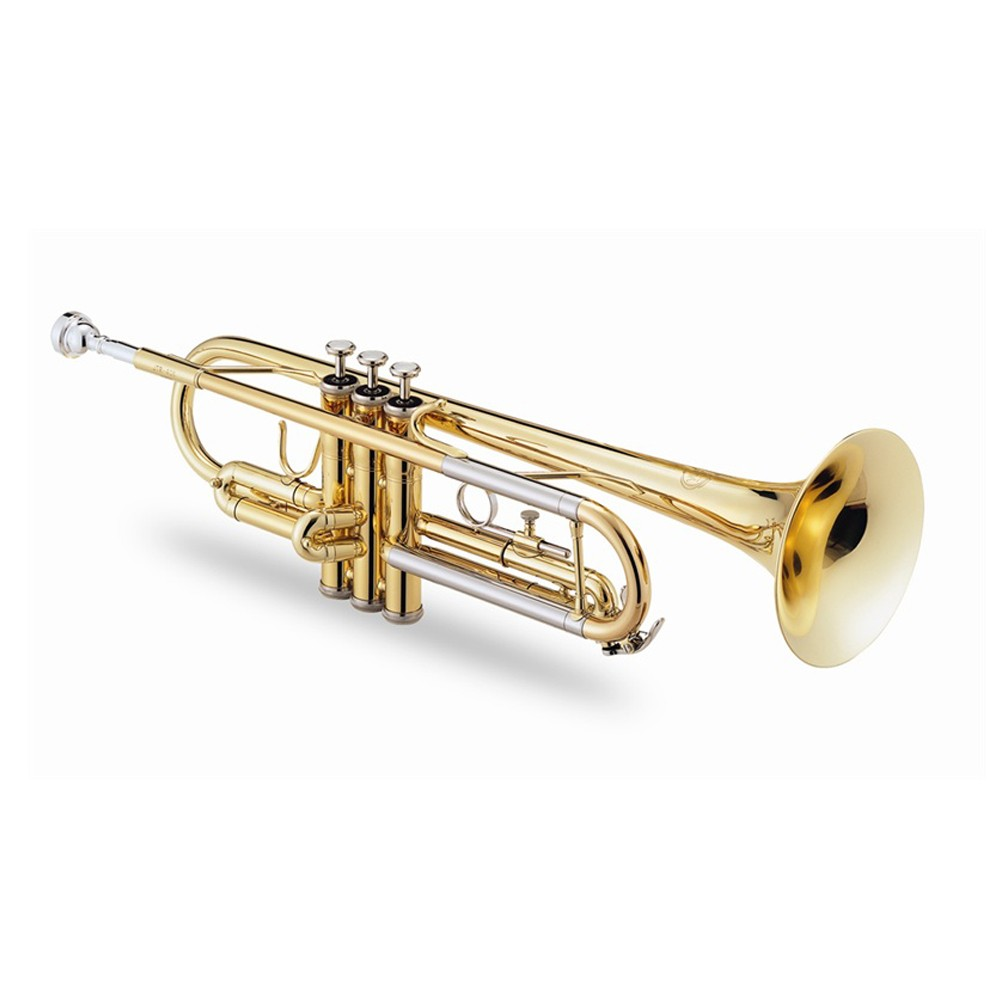
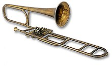

TROMPETAS
HISTORIA
La historia de la trompeta se remonta a los orígenes de la historia de la humanidad. Casi tan antiguas como la flauta, que se repunta como el instrumento más antiguo y generalizado, debieron ser la trompeta y la corneta, derivadas del cuerno de buey que aún puede servir como trompa de caza. Por lo tanto, las primeras trompetas fueron fabricadas con cuernos de animales cocidos, cañas de bambú, tubos vegetales ahuecados o conchas de moluscos y eran empleadas por las personas primitivas para diversas cuestiones como eran los entierros, rituales para ahuyentar a los malos espíritus, para la caza o transmitir señales

visita esta pagina para mas informacion
TROMPETA POCKET
TROMPETA PICCOLO
TROMPETA DE VARAS
>

